Candidate 1: ISIC_9209515
cross_source_transformed_perceptual; pHash 2; dHash 12; transform center_crop80; geometry unreliable. Automated only; unreviewed.
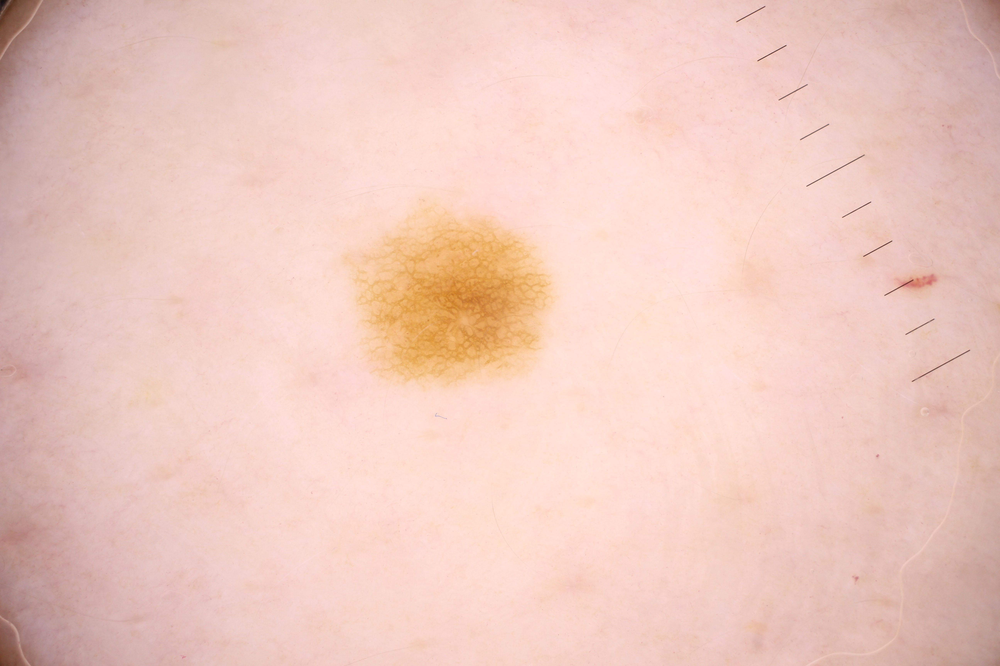

Click images for original resolution. This gallery shows up to three closest relations per image; the CSV holds every relation. No reviewer decision is inferred.
cross_source_transformed_perceptual; pHash 2; dHash 12; transform center_crop80; geometry unreliable. Automated only; unreviewed.

cross_source_transformed_perceptual; pHash 2; dHash 14; transform native; geometry unreliable. Automated only; unreviewed.
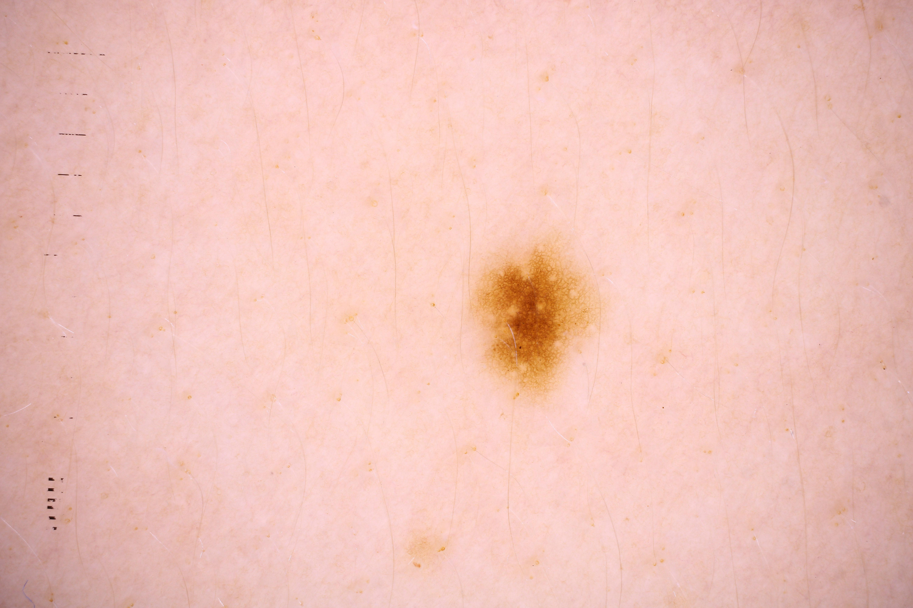

cross_source_transformed_perceptual; pHash 2; dHash 15; transform center_crop80; geometry unreliable. Automated only; unreviewed.
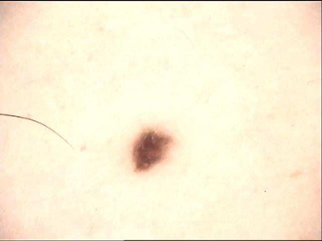

cross_source_transformed_perceptual; pHash 2; dHash 24; transform rotate270; geometry unreliable. Automated only; unreviewed.
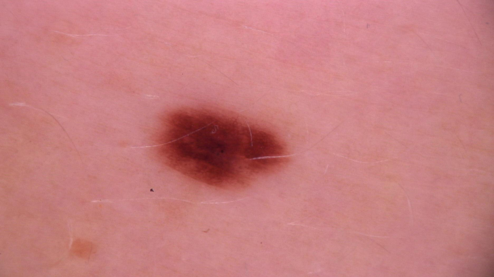

cross_source_transformed_perceptual; pHash 2; dHash 30; transform rotate270; geometry unreliable. Automated only; unreviewed.
cross_source_transformed_perceptual; pHash 3; dHash 7; transform horizontal_flip; geometry unreliable. Automated only; unreviewed.
cross_source_transformed_perceptual; pHash 3; dHash 8; transform native; geometry unreliable. Automated only; unreviewed.
cross_source_perceptual; pHash 3; dHash 9; transform native; geometry unreliable. Automated only; unreviewed.


cross_source_transformed_perceptual; pHash 3; dHash 9; transform center_crop80; geometry unreliable. Automated only; unreviewed.
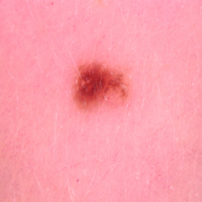
cross_source_transformed_perceptual; pHash 3; dHash 9; transform center_crop80; geometry unreliable. Automated only; unreviewed.
cross_source_transformed_perceptual; pHash 3; dHash 11; transform rotate270; geometry unreliable. Automated only; unreviewed.
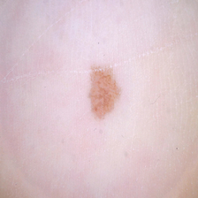
cross_source_transformed_perceptual; pHash 4; dHash 3; transform horizontal_flip; geometry unreliable. Automated only; unreviewed.
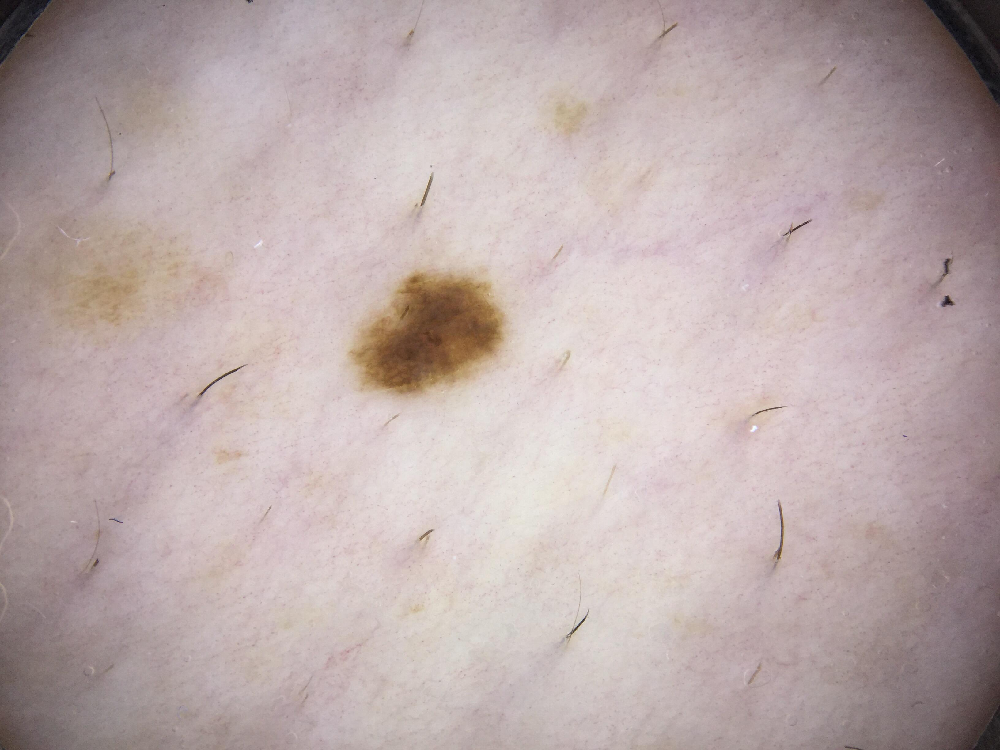

within_siim_transformed_perceptual; pHash 4; dHash 5; transform rotate180; geometry unreliable. Automated only; unreviewed.
cross_source_perceptual; pHash 4; dHash 8; transform native; geometry unreliable. Automated only; unreviewed.

cross_source_perceptual; pHash 4; dHash 8; transform native; geometry not_run. Automated only; unreviewed.

cross_source_transformed_perceptual; pHash 4; dHash 12; transform native; geometry unreliable. Automated only; unreviewed.
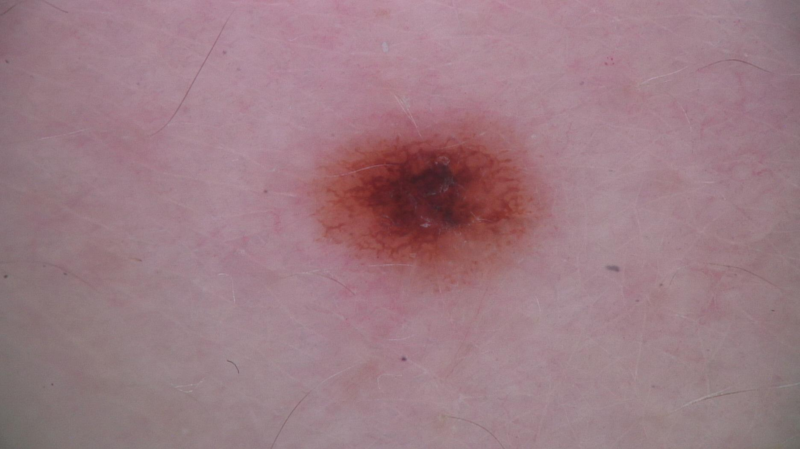

within_siim_transformed_perceptual; pHash 4; dHash 13; transform rotate90; geometry unreliable. Automated only; unreviewed.
within_siim_transformed_perceptual; pHash 4; dHash 14; transform center_crop80; geometry unreliable. Automated only; unreviewed.
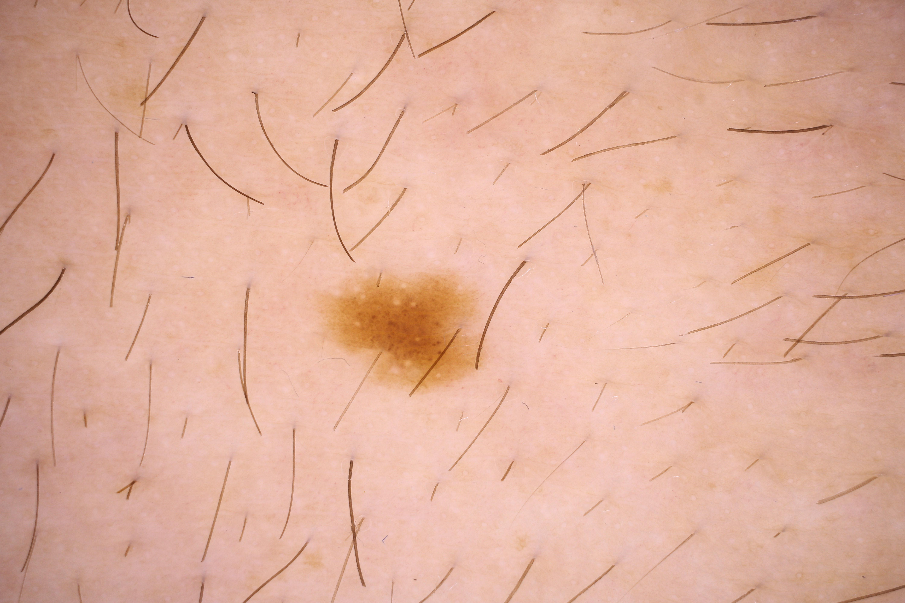

cross_source_transformed_perceptual; pHash 4; dHash 14; transform center_crop80; geometry unreliable. Automated only; unreviewed.
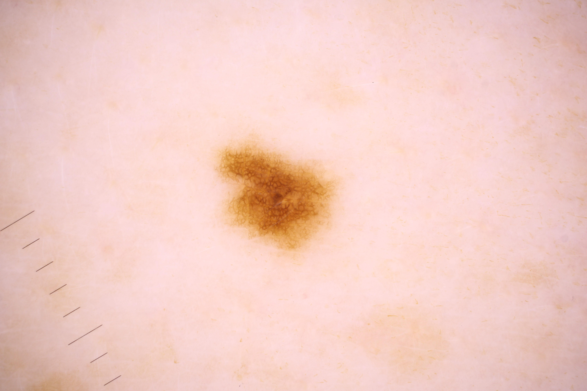
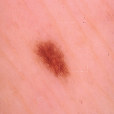
cross_source_transformed_perceptual; pHash 4; dHash 14; transform center_crop80; geometry unreliable. Automated only; unreviewed.
cross_source_perceptual; pHash 5; dHash 5; transform native; geometry unreliable. Automated only; unreviewed.


cross_source_transformed_perceptual; pHash 5; dHash 5; transform horizontal_flip; geometry unreliable. Automated only; unreviewed.
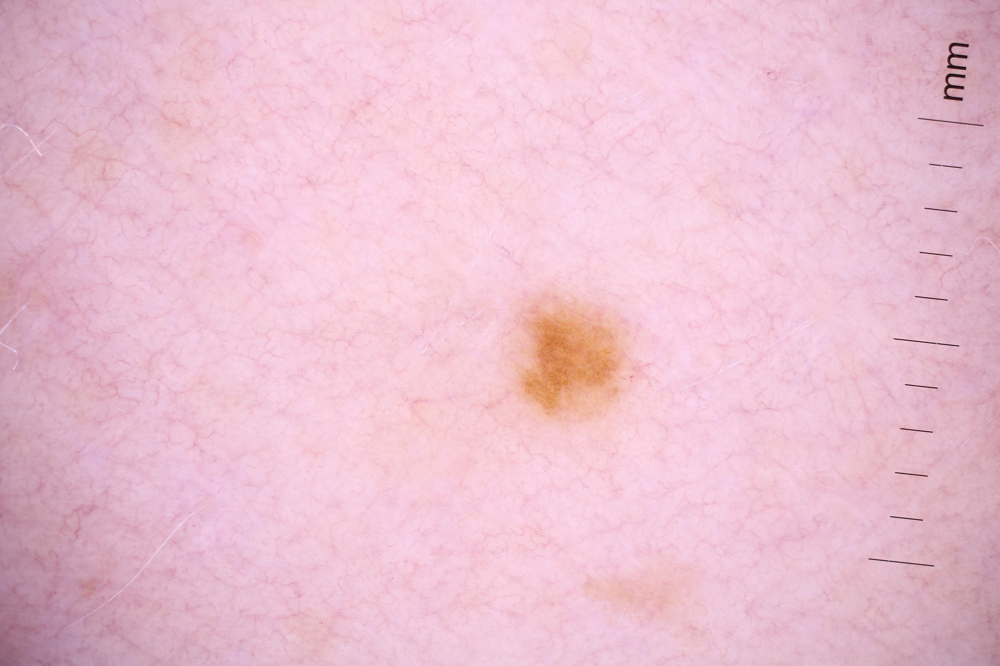

cross_source_transformed_perceptual; pHash 5; dHash 6; transform native; geometry unreliable. Automated only; unreviewed.
within_siim_transformed_perceptual; pHash 5; dHash 6; transform native; geometry unreliable. Automated only; unreviewed.
cross_source_transformed_perceptual; pHash 5; dHash 9; transform center_crop80; geometry unreliable. Automated only; unreviewed.
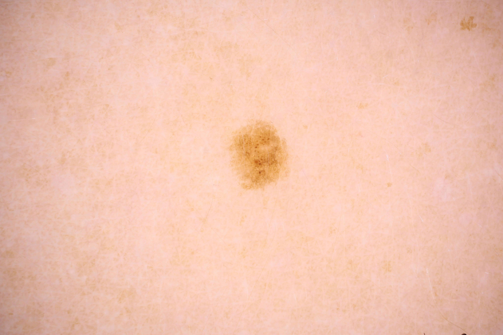

cross_source_transformed_perceptual; pHash 5; dHash 10; transform horizontal_flip; geometry unreliable. Automated only; unreviewed.
cross_source_transformed_perceptual; pHash 5; dHash 10; transform rotate270; geometry unreliable. Automated only; unreviewed.
cross_source_transformed_perceptual; pHash 5; dHash 10; transform rotate270; geometry unreliable. Automated only; unreviewed.
cross_source_transformed_perceptual; pHash 5; dHash 10; transform center_crop80; geometry unreliable. Automated only; unreviewed.
cross_source_transformed_perceptual; pHash 5; dHash 11; transform center_crop80; geometry unreliable. Automated only; unreviewed.
cross_source_transformed_perceptual; pHash 5; dHash 12; transform center_crop80; geometry unreliable. Automated only; unreviewed.
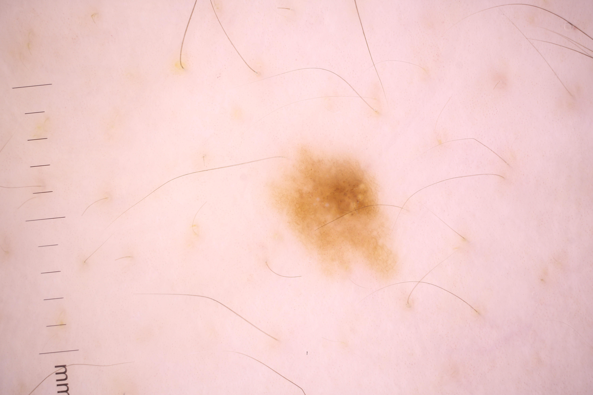

cross_source_transformed_perceptual; pHash 5; dHash 13; transform native; geometry unreliable. Automated only; unreviewed.
cross_source_transformed_perceptual; pHash 5; dHash 13; transform center_crop80; geometry unreliable. Automated only; unreviewed.
cross_source_transformed_perceptual; pHash 5; dHash 18; transform center_crop80; geometry unreliable. Automated only; unreviewed.
cross_source_transformed_perceptual; pHash 5; dHash 18; transform rotate90; geometry unreliable. Automated only; unreviewed.
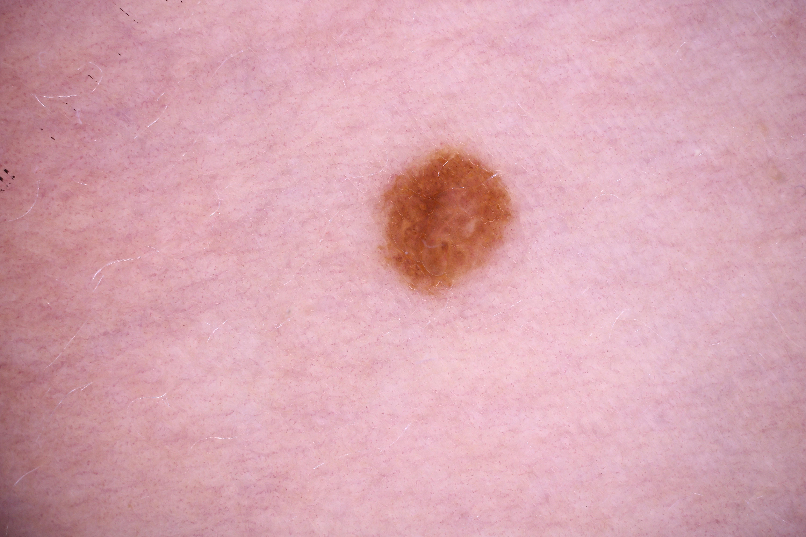

within_siim_transformed_perceptual; pHash 6; dHash 4; transform center_crop80; geometry unreliable. Automated only; unreviewed.
cross_source_transformed_perceptual; pHash 6; dHash 5; transform native; geometry unreliable. Automated only; unreviewed.
cross_source_transformed_perceptual; pHash 6; dHash 6; transform rotate180; geometry unreliable. Automated only; unreviewed.
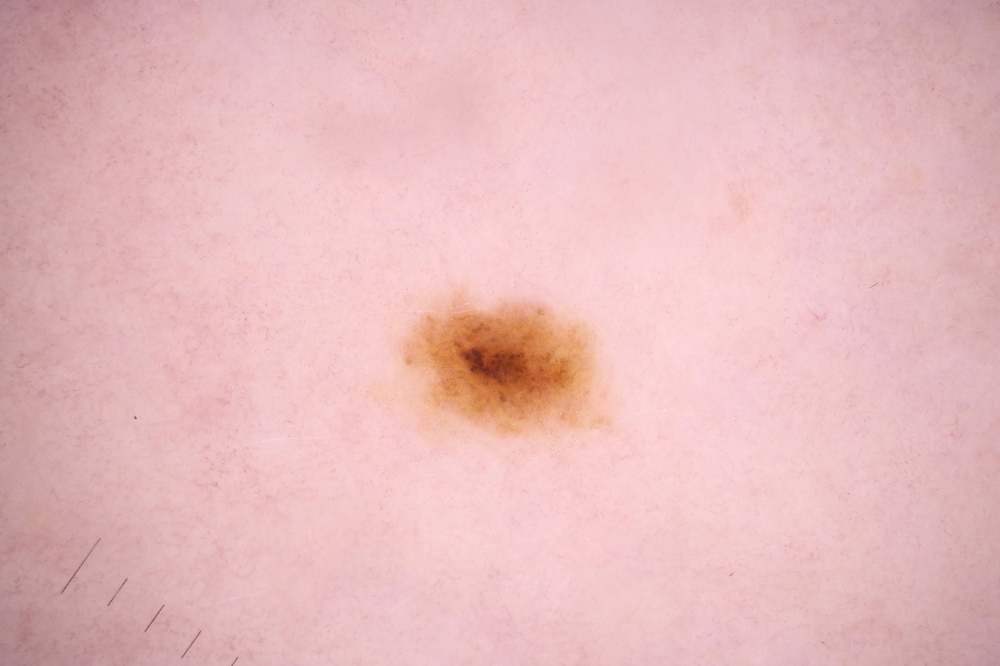

cross_source_transformed_perceptual; pHash 6; dHash 6; transform center_crop80; geometry unreliable. Automated only; unreviewed.
within_siim_transformed_perceptual; pHash 6; dHash 7; transform rotate180; geometry unreliable. Automated only; unreviewed.
cross_source_transformed_perceptual; pHash 6; dHash 8; transform rotate180; geometry unreliable. Automated only; unreviewed.
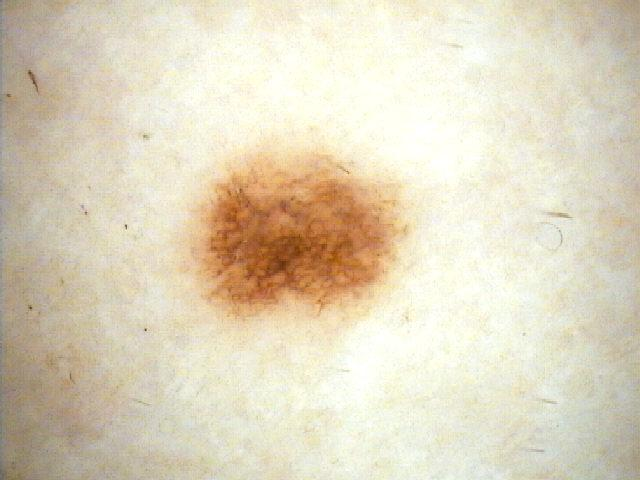

cross_source_transformed_perceptual; pHash 6; dHash 8; transform horizontal_flip; geometry unreliable. Automated only; unreviewed.
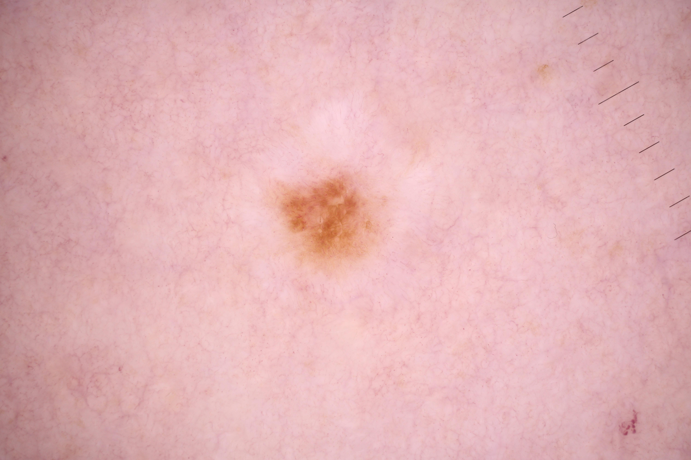

cross_source_transformed_perceptual; pHash 6; dHash 8; transform center_crop80; geometry unreliable. Automated only; unreviewed.
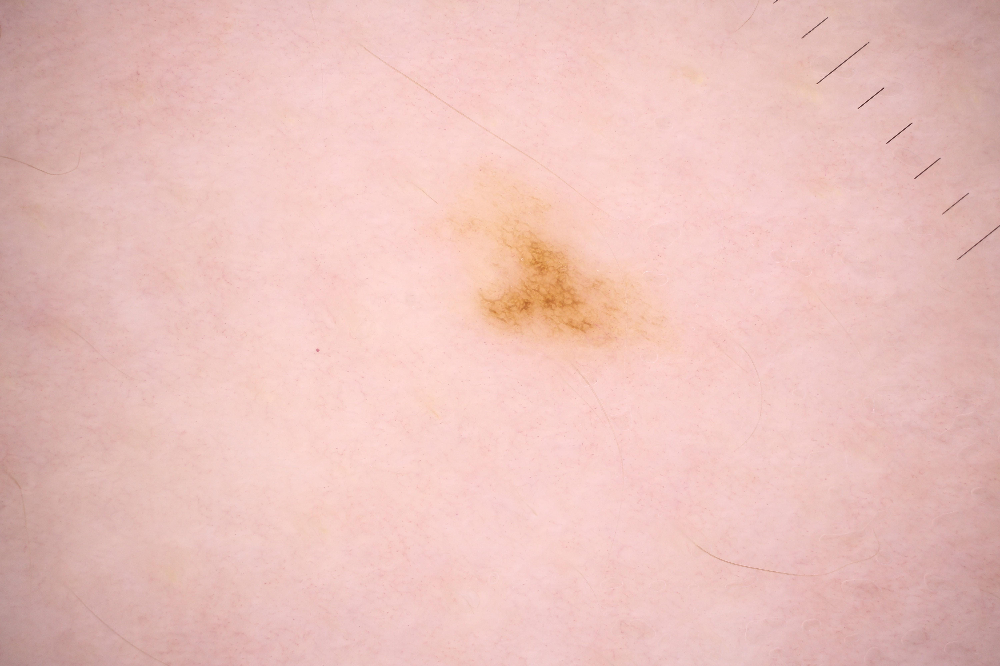

cross_source_transformed_perceptual; pHash 6; dHash 9; transform horizontal_flip; geometry unreliable. Automated only; unreviewed.
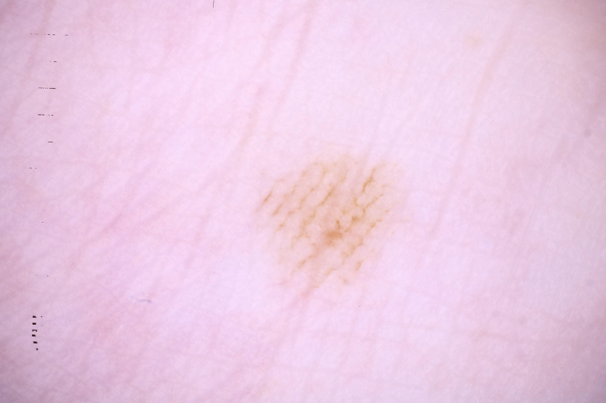

within_siim_transformed_perceptual; pHash 6; dHash 9; transform rotate90; geometry unreliable. Automated only; unreviewed.
cross_source_transformed_perceptual; pHash 6; dHash 9; transform center_crop80; geometry unreliable. Automated only; unreviewed.
cross_source_transformed_perceptual; pHash 6; dHash 10; transform horizontal_flip; geometry unreliable. Automated only; unreviewed.
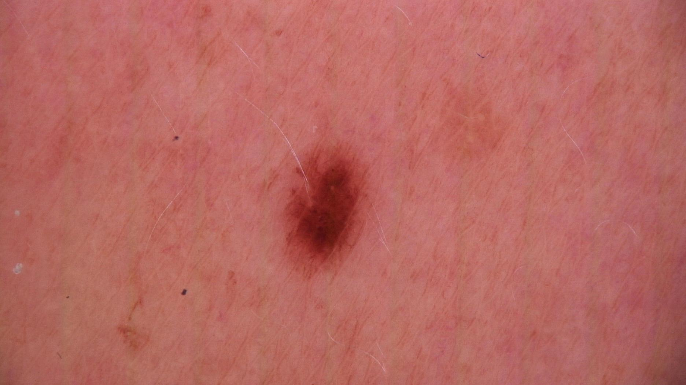

cross_source_transformed_perceptual; pHash 6; dHash 11; transform rotate90; geometry unreliable. Automated only; unreviewed.
cross_source_transformed_perceptual; pHash 6; dHash 11; transform horizontal_flip; geometry unreliable. Automated only; unreviewed.
cross_source_transformed_perceptual; pHash 6; dHash 12; transform rotate270; geometry unreliable. Automated only; unreviewed.
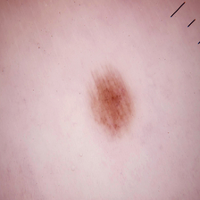
cross_source_transformed_perceptual; pHash 6; dHash 12; transform native; geometry unreliable. Automated only; unreviewed.
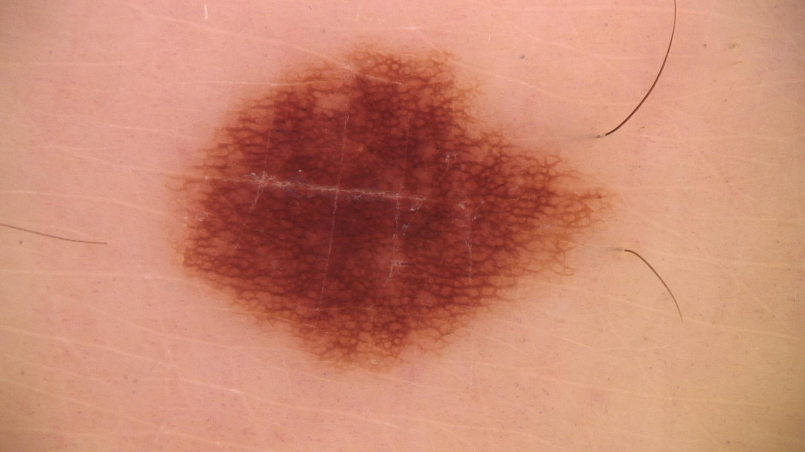

cross_source_transformed_perceptual; pHash 6; dHash 12; transform rotate90; geometry unreliable. Automated only; unreviewed.
cross_source_transformed_perceptual; pHash 6; dHash 13; transform center_crop80; geometry unreliable. Automated only; unreviewed.
cross_source_transformed_perceptual; pHash 6; dHash 18; transform center_crop80; geometry unreliable. Automated only; unreviewed.
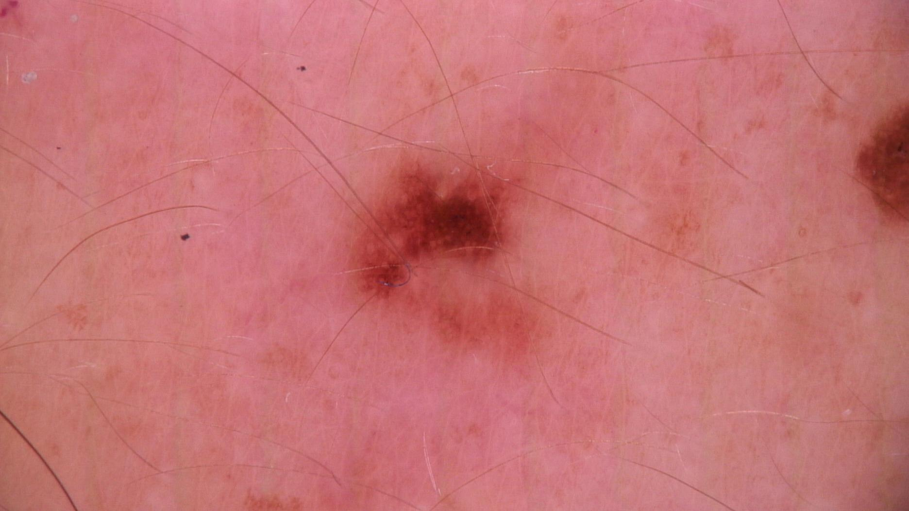

within_siim_transformed_perceptual; pHash 6; dHash 19; transform center_crop80; geometry unreliable. Automated only; unreviewed.
cross_source_transformed_perceptual; pHash 6; dHash 20; transform rotate180; geometry unreliable. Automated only; unreviewed.
cross_source_transformed_perceptual; pHash 6; dHash 23; transform horizontal_flip; geometry unreliable. Automated only; unreviewed.
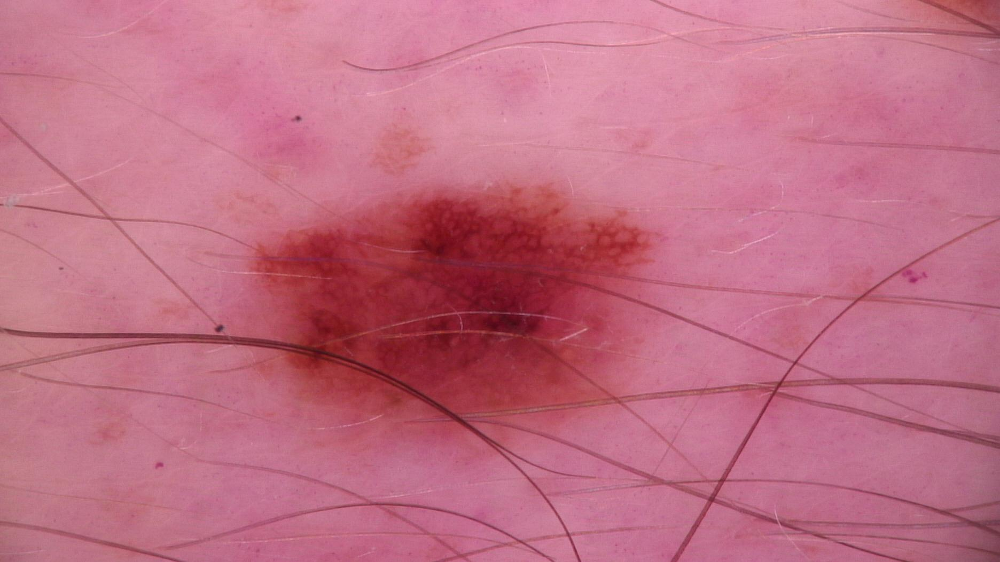

cross_source_transformed_perceptual; pHash 6; dHash 26; transform center_crop80; geometry unreliable. Automated only; unreviewed.
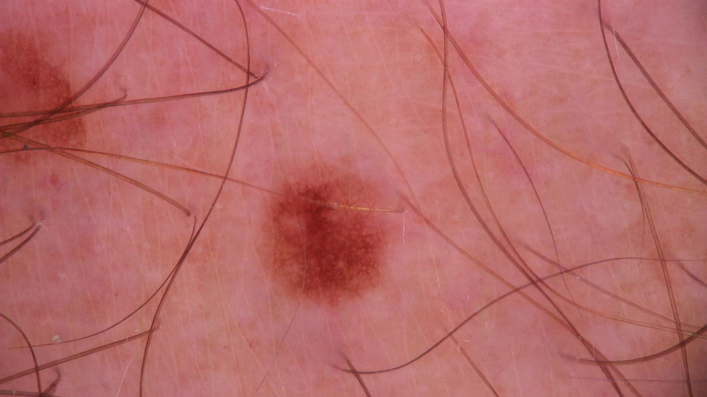

cross_source_perceptual; pHash 7; dHash 6; transform native; geometry unreliable. Automated only; unreviewed.

within_siim_transformed_perceptual; pHash 7; dHash 9; transform horizontal_flip; geometry unreliable. Automated only; unreviewed.
cross_source_transformed_perceptual; pHash 7; dHash 10; transform rotate90; geometry unreliable. Automated only; unreviewed.
cross_source_transformed_perceptual; pHash 7; dHash 10; transform horizontal_flip; geometry unreliable. Automated only; unreviewed.
cross_source_transformed_perceptual; pHash 7; dHash 12; transform horizontal_flip; geometry unreliable. Automated only; unreviewed.
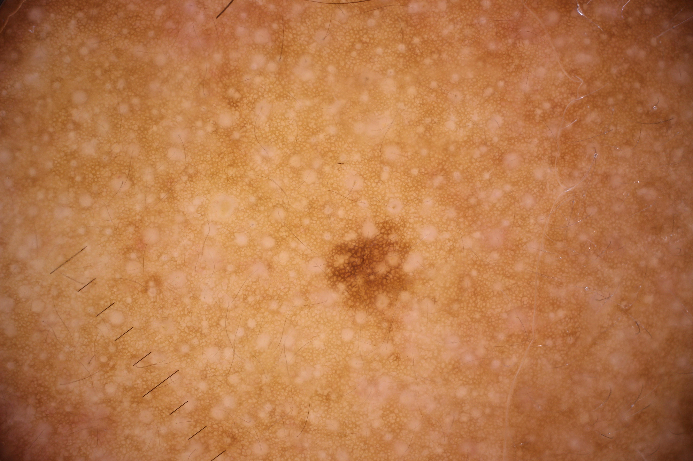

cross_source_transformed_perceptual; pHash 7; dHash 12; transform rotate270; geometry unreliable. Automated only; unreviewed.
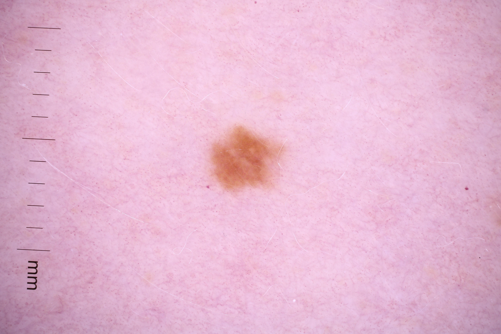

cross_source_transformed_perceptual; pHash 7; dHash 14; transform rotate180; geometry unreliable. Automated only; unreviewed.
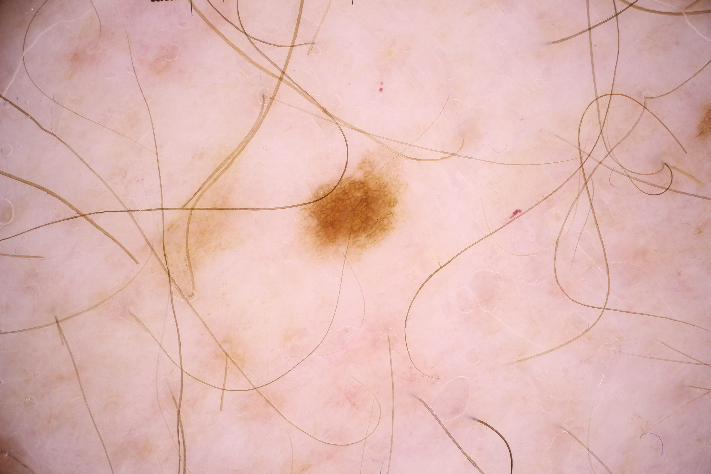

cross_source_transformed_perceptual; pHash 7; dHash 16; transform center_crop80; geometry unreliable. Automated only; unreviewed.
cross_source_transformed_perceptual; pHash 7; dHash 17; transform native; geometry unreliable. Automated only; unreviewed.
cross_source_transformed_perceptual; pHash 7; dHash 17; transform horizontal_flip; geometry unreliable. Automated only; unreviewed.
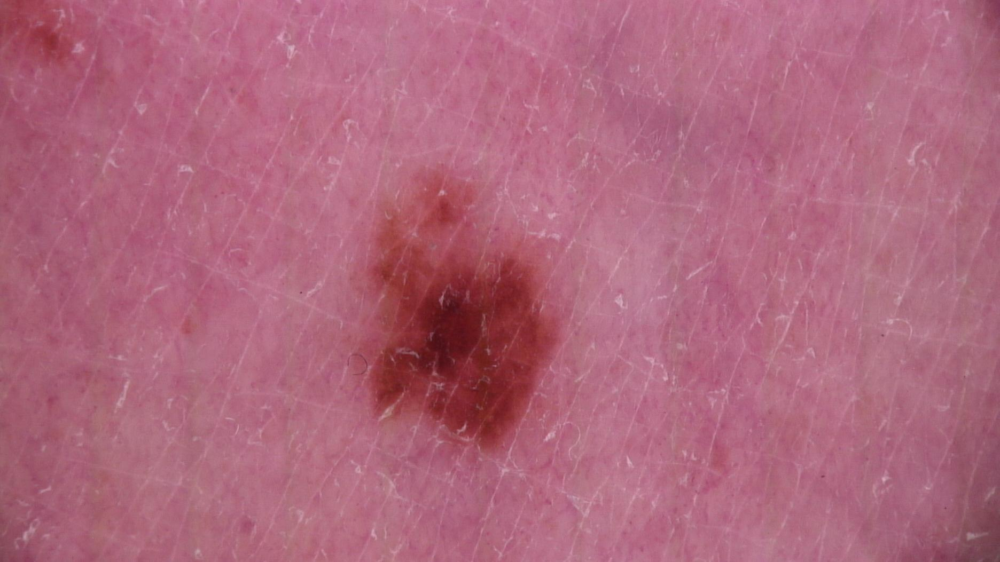

cross_source_transformed_perceptual; pHash 7; dHash 18; transform rotate180; geometry unreliable. Automated only; unreviewed.
cross_source_transformed_perceptual; pHash 7; dHash 19; transform center_crop80; geometry unreliable. Automated only; unreviewed.


cross_source_transformed_perceptual; pHash 7; dHash 19; transform rotate90; geometry unreliable. Automated only; unreviewed.
cross_source_transformed_perceptual; pHash 7; dHash 20; transform native; geometry unreliable. Automated only; unreviewed.
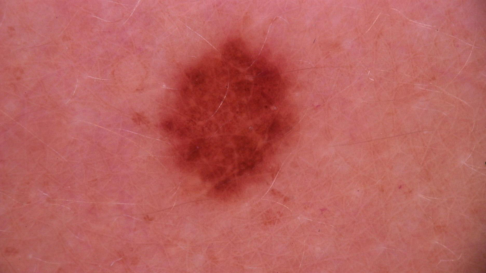

cross_source_transformed_perceptual; pHash 7; dHash 20; transform native; geometry unreliable. Automated only; unreviewed.
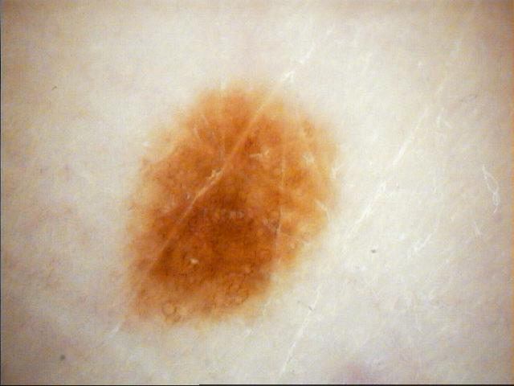

cross_source_transformed_perceptual; pHash 7; dHash 22; transform center_crop80; geometry unreliable. Automated only; unreviewed.
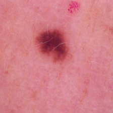
cross_source_transformed_perceptual; pHash 7; dHash 22; transform center_crop80; geometry unreliable. Automated only; unreviewed.

cross_source_transformed_perceptual; pHash 7; dHash 24; transform horizontal_flip; geometry unreliable. Automated only; unreviewed.
cross_source_perceptual; pHash 8; dHash 4; transform native; geometry unreliable. Automated only; unreviewed.


cross_source_perceptual; pHash 8; dHash 4; transform native; geometry unreliable. Automated only; unreviewed.

cross_source_perceptual; pHash 8; dHash 5; transform native; geometry unreliable. Automated only; unreviewed.
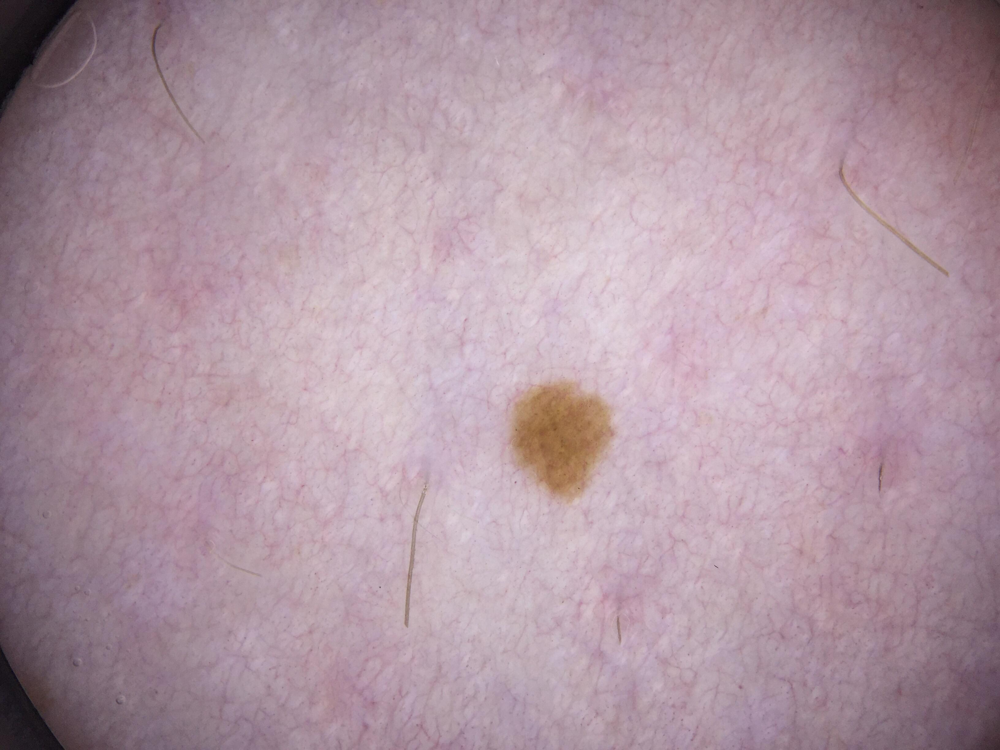
cross_source_perceptual; pHash 8; dHash 5; transform native; geometry unreliable. Automated only; unreviewed.


cross_source_transformed_perceptual; pHash 8; dHash 6; transform rotate180; geometry unreliable. Automated only; unreviewed.
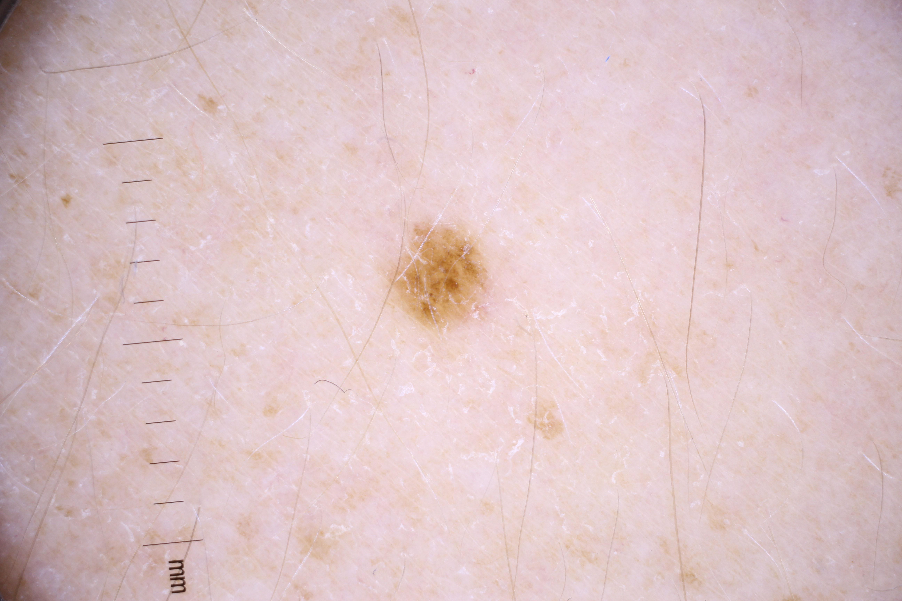

cross_source_transformed_perceptual; pHash 8; dHash 6; transform rotate180; geometry unreliable. Automated only; unreviewed.
cross_source_transformed_perceptual; pHash 8; dHash 6; transform horizontal_flip; geometry unreliable. Automated only; unreviewed.
cross_source_transformed_perceptual; pHash 8; dHash 6; transform center_crop80; geometry unreliable. Automated only; unreviewed.
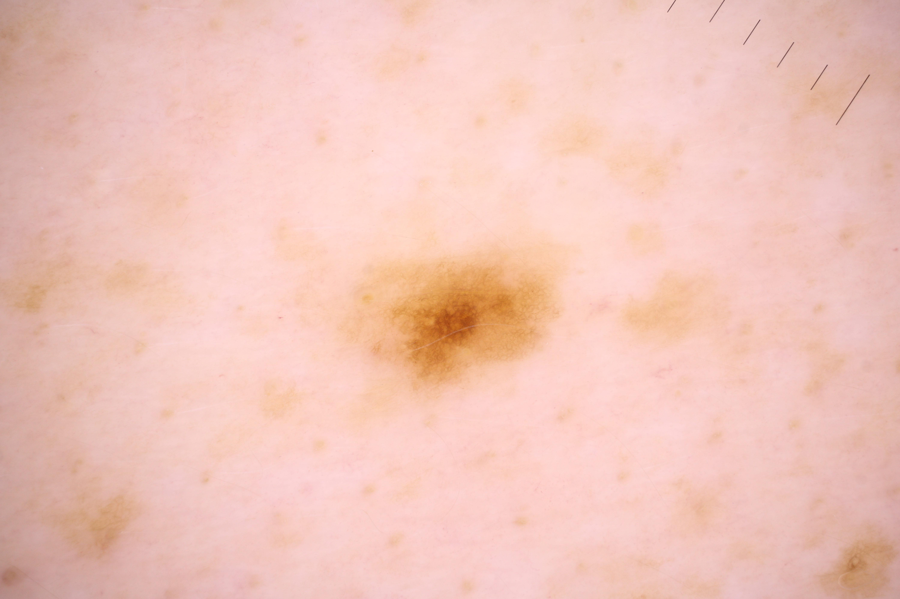

within_siim_transformed_perceptual; pHash 8; dHash 7; transform rotate180; geometry unreliable. Automated only; unreviewed.
cross_source_perceptual; pHash 8; dHash 7; transform native; geometry unreliable. Automated only; unreviewed.
cross_source_transformed_perceptual; pHash 8; dHash 8; transform rotate270; geometry unreliable. Automated only; unreviewed.
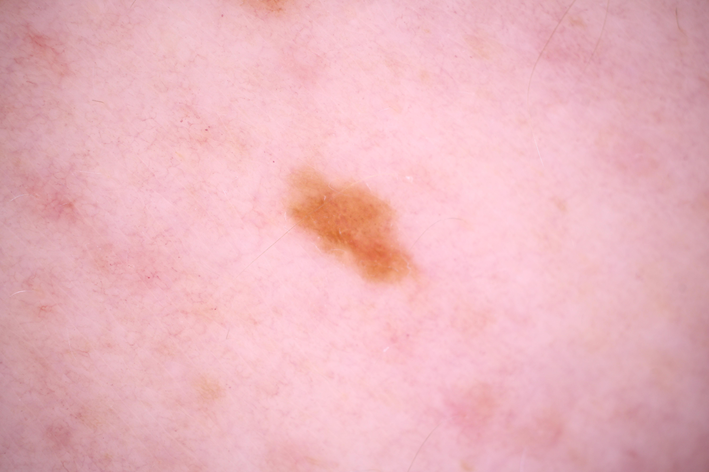
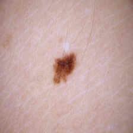
cross_source_transformed_perceptual; pHash 8; dHash 8; transform rotate270; geometry unreliable. Automated only; unreviewed.
within_siim_transformed_perceptual; pHash 8; dHash 10; transform horizontal_flip; geometry unreliable. Automated only; unreviewed.
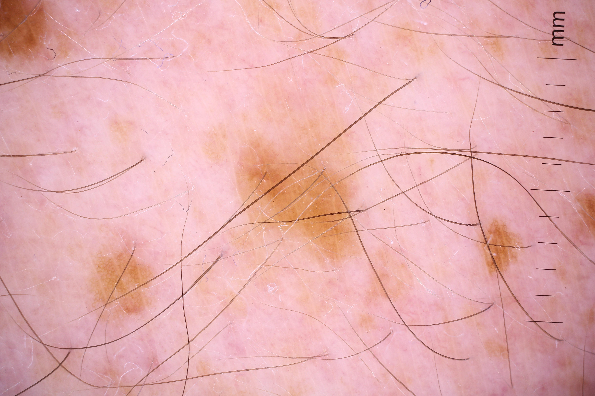
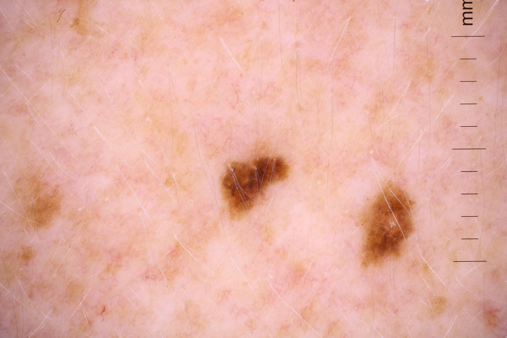
cross_source_transformed_perceptual; pHash 8; dHash 10; transform center_crop80; geometry unreliable. Automated only; unreviewed.
cross_source_perceptual; pHash 8; dHash 10; transform native; geometry unreliable. Automated only; unreviewed.

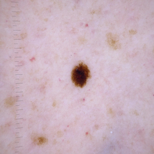
cross_source_perceptual; pHash 8; dHash 10; transform native; geometry unreliable. Automated only; unreviewed.

cross_source_perceptual; pHash 8; dHash 10; transform native; geometry not_run. Automated only; unreviewed.


cross_source_transformed_perceptual; pHash 8; dHash 11; transform native; geometry unreliable. Automated only; unreviewed.
cross_source_transformed_perceptual; pHash 8; dHash 11; transform horizontal_flip; geometry unreliable. Automated only; unreviewed.
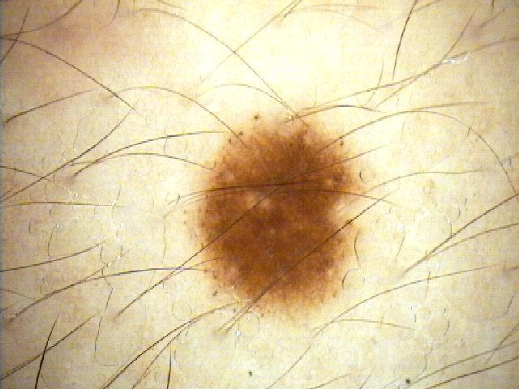

cross_source_transformed_perceptual; pHash 8; dHash 11; transform rotate270; geometry unreliable. Automated only; unreviewed.
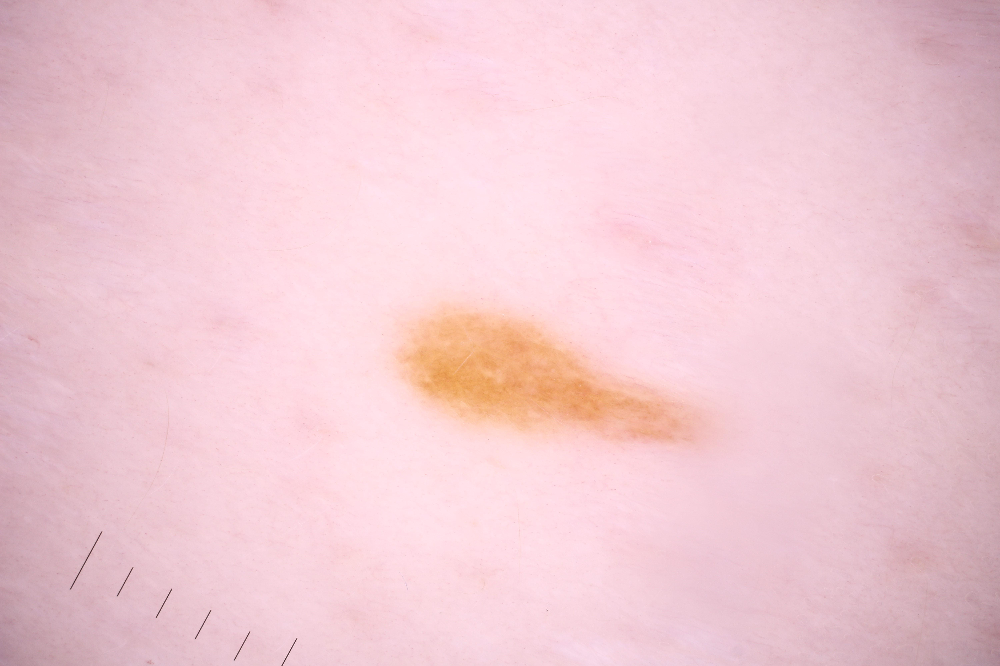

cross_source_transformed_perceptual; pHash 8; dHash 12; transform rotate180; geometry unreliable. Automated only; unreviewed.
cross_source_transformed_perceptual; pHash 8; dHash 12; transform rotate270; geometry unreliable. Automated only; unreviewed.
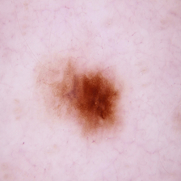
cross_source_transformed_perceptual; pHash 8; dHash 12; transform rotate270; geometry unreliable. Automated only; unreviewed.
cross_source_transformed_perceptual; pHash 8; dHash 12; transform horizontal_flip; geometry unreliable. Automated only; unreviewed.
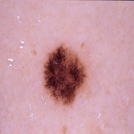
within_siim_transformed_perceptual; pHash 8; dHash 13; transform horizontal_flip; geometry unreliable. Automated only; unreviewed.

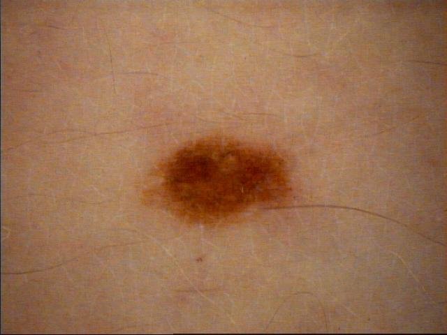
cross_source_transformed_perceptual; pHash 8; dHash 13; transform rotate270; geometry unreliable. Automated only; unreviewed.
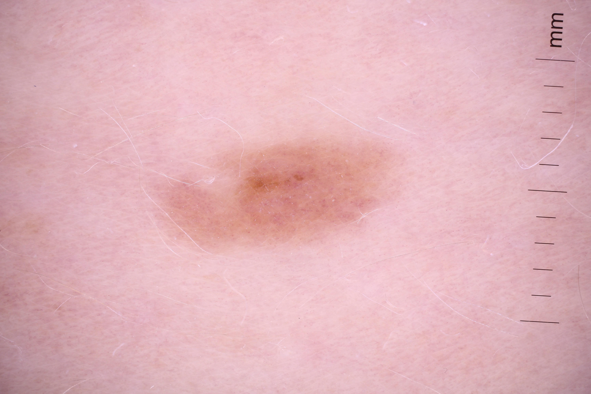

cross_source_transformed_perceptual; pHash 8; dHash 13; transform native; geometry unreliable. Automated only; unreviewed.
cross_source_transformed_perceptual; pHash 8; dHash 13; transform native; geometry unreliable. Automated only; unreviewed.
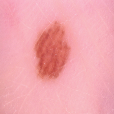
cross_source_transformed_perceptual; pHash 8; dHash 13; transform center_crop80; geometry unreliable. Automated only; unreviewed.
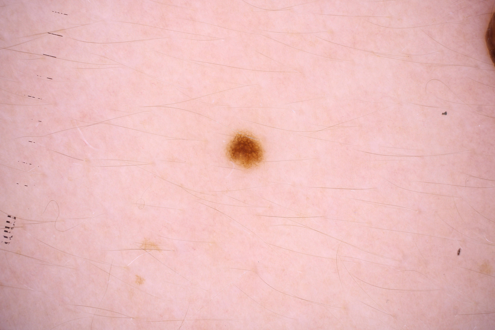
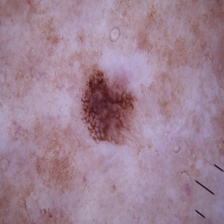
cross_source_transformed_perceptual; pHash 8; dHash 13; transform center_crop80; geometry unreliable. Automated only; unreviewed.
cross_source_transformed_perceptual; pHash 8; dHash 13; transform center_crop80; geometry unreliable. Automated only; unreviewed.
within_siim_transformed_perceptual; pHash 8; dHash 14; transform rotate90; geometry unreliable. Automated only; unreviewed.
cross_source_transformed_perceptual; pHash 8; dHash 14; transform rotate180; geometry unreliable. Automated only; unreviewed.
cross_source_transformed_perceptual; pHash 8; dHash 14; transform center_crop80; geometry unreliable. Automated only; unreviewed.
cross_source_transformed_perceptual; pHash 8; dHash 15; transform native; geometry unreliable. Automated only; unreviewed.
cross_source_transformed_perceptual; pHash 8; dHash 15; transform native; geometry unreliable. Automated only; unreviewed.
cross_source_transformed_perceptual; pHash 8; dHash 16; transform center_crop80; geometry unreliable. Automated only; unreviewed.
cross_source_transformed_perceptual; pHash 8; dHash 16; transform native; geometry unreliable. Automated only; unreviewed.
cross_source_transformed_perceptual; pHash 8; dHash 16; transform horizontal_flip; geometry unreliable. Automated only; unreviewed.
cross_source_transformed_perceptual; pHash 8; dHash 16; transform horizontal_flip; geometry unreliable. Automated only; unreviewed.
cross_source_transformed_perceptual; pHash 8; dHash 16; transform native; geometry unreliable. Automated only; unreviewed.
cross_source_transformed_perceptual; pHash 8; dHash 16; transform rotate270; geometry unreliable. Automated only; unreviewed.
cross_source_transformed_perceptual; pHash 8; dHash 16; transform rotate180; geometry unreliable. Automated only; unreviewed.
cross_source_transformed_perceptual; pHash 8; dHash 16; transform rotate180; geometry unreliable. Automated only; unreviewed.
cross_source_transformed_perceptual; pHash 8; dHash 17; transform rotate90; geometry unreliable. Automated only; unreviewed.
cross_source_transformed_perceptual; pHash 8; dHash 19; transform horizontal_flip; geometry unreliable. Automated only; unreviewed.
cross_source_transformed_perceptual; pHash 8; dHash 19; transform center_crop80; geometry unreliable. Automated only; unreviewed.
cross_source_transformed_perceptual; pHash 8; dHash 20; transform horizontal_flip; geometry unreliable. Automated only; unreviewed.
cross_source_transformed_perceptual; pHash 8; dHash 21; transform horizontal_flip; geometry unreliable. Automated only; unreviewed.
cross_source_transformed_perceptual; pHash 8; dHash 21; transform horizontal_flip; geometry unreliable. Automated only; unreviewed.
cross_source_transformed_perceptual; pHash 8; dHash 21; transform native; geometry unreliable. Automated only; unreviewed.
cross_source_transformed_perceptual; pHash 8; dHash 22; transform center_crop80; geometry unreliable. Automated only; unreviewed.
cross_source_transformed_perceptual; pHash 8; dHash 23; transform horizontal_flip; geometry unreliable. Automated only; unreviewed.
cross_source_transformed_perceptual; pHash 8; dHash 23; transform rotate90; geometry unreliable. Automated only; unreviewed.
cross_source_transformed_perceptual; pHash 8; dHash 25; transform rotate180; geometry unreliable. Automated only; unreviewed.
cross_source_transformed_perceptual; pHash 8; dHash 25; transform horizontal_flip; geometry unreliable. Automated only; unreviewed.
cross_source_transformed_perceptual; pHash 8; dHash 27; transform rotate180; geometry unreliable. Automated only; unreviewed.
cross_source_transformed_perceptual; pHash 8; dHash 35; transform rotate180; geometry unreliable. Automated only; unreviewed.
cross_source_perceptual; pHash 9; dHash 4; transform native; geometry unreliable. Automated only; unreviewed.

within_siim_transformed_perceptual; pHash 9; dHash 4; transform center_crop80; geometry unreliable. Automated only; unreviewed.
cross_source_perceptual; pHash 9; dHash 4; transform native; geometry unreliable. Automated only; unreviewed.
cross_source_transformed_perceptual; pHash 9; dHash 4; transform horizontal_flip; geometry unreliable. Automated only; unreviewed.
cross_source_transformed_perceptual; pHash 9; dHash 5; transform horizontal_flip; geometry unreliable. Automated only; unreviewed.
cross_source_transformed_perceptual; pHash 9; dHash 6; transform center_crop80; geometry unreliable. Automated only; unreviewed.
within_siim_transformed_perceptual; pHash 9; dHash 6; transform center_crop80; geometry unreliable. Automated only; unreviewed.
cross_source_perceptual; pHash 9; dHash 6; transform native; geometry unreliable. Automated only; unreviewed.
cross_source_transformed_perceptual; pHash 9; dHash 8; transform native; geometry unreliable. Automated only; unreviewed.
cross_source_transformed_perceptual; pHash 9; dHash 8; transform native; geometry unreliable. Automated only; unreviewed.
cross_source_transformed_perceptual; pHash 9; dHash 8; transform rotate180; geometry unreliable. Automated only; unreviewed.
cross_source_transformed_perceptual; pHash 9; dHash 8; transform center_crop80; geometry unreliable. Automated only; unreviewed.
cross_source_transformed_perceptual; pHash 9; dHash 8; transform center_crop80; geometry unreliable. Automated only; unreviewed.
cross_source_transformed_perceptual; pHash 9; dHash 9; transform rotate270; geometry unreliable. Automated only; unreviewed.
within_siim_transformed_perceptual; pHash 9; dHash 9; transform rotate270; geometry unreliable. Automated only; unreviewed.
cross_source_perceptual; pHash 9; dHash 9; transform native; geometry unreliable. Automated only; unreviewed.

cross_source_perceptual; pHash 9; dHash 9; transform native; geometry unreliable. Automated only; unreviewed.

cross_source_transformed_perceptual; pHash 9; dHash 9; transform rotate180; geometry unreliable. Automated only; unreviewed.
cross_source_transformed_perceptual; pHash 9; dHash 9; transform horizontal_flip; geometry unreliable. Automated only; unreviewed.
cross_source_transformed_perceptual; pHash 9; dHash 9; transform rotate180; geometry unreliable. Automated only; unreviewed.
cross_source_transformed_perceptual; pHash 9; dHash 9; transform center_crop80; geometry unreliable. Automated only; unreviewed.
cross_source_perceptual; pHash 9; dHash 10; transform native; geometry unreliable. Automated only; unreviewed.


cross_source_transformed_perceptual; pHash 9; dHash 10; transform center_crop80; geometry unreliable. Automated only; unreviewed.
cross_source_transformed_perceptual; pHash 9; dHash 10; transform rotate180; geometry unreliable. Automated only; unreviewed.
within_siim_transformed_perceptual; pHash 9; dHash 11; transform rotate90; geometry unreliable. Automated only; unreviewed.
cross_source_transformed_perceptual; pHash 9; dHash 11; transform native; geometry unreliable. Automated only; unreviewed.
cross_source_transformed_perceptual; pHash 9; dHash 11; transform native; geometry unreliable. Automated only; unreviewed.
cross_source_transformed_perceptual; pHash 9; dHash 12; transform rotate90; geometry unreliable. Automated only; unreviewed.
cross_source_transformed_perceptual; pHash 9; dHash 12; transform center_crop80; geometry unreliable. Automated only; unreviewed.
cross_source_transformed_perceptual; pHash 9; dHash 12; transform rotate180; geometry unreliable. Automated only; unreviewed.
within_siim_transformed_perceptual; pHash 9; dHash 13; transform rotate90; geometry coherent. Automated only; unreviewed.
cross_source_transformed_perceptual; pHash 9; dHash 13; transform native; geometry unreliable. Automated only; unreviewed.
within_siim_transformed_perceptual; pHash 9; dHash 14; transform rotate180; geometry unreliable. Automated only; unreviewed.
cross_source_transformed_perceptual; pHash 9; dHash 14; transform rotate90; geometry unreliable. Automated only; unreviewed.
cross_source_transformed_perceptual; pHash 9; dHash 14; transform center_crop80; geometry unreliable. Automated only; unreviewed.
cross_source_transformed_perceptual; pHash 9; dHash 14; transform native; geometry unreliable. Automated only; unreviewed.
cross_source_transformed_perceptual; pHash 9; dHash 14; transform native; geometry unreliable. Automated only; unreviewed.
within_siim_transformed_perceptual; pHash 9; dHash 15; transform rotate90; geometry unreliable. Automated only; unreviewed.
cross_source_transformed_perceptual; pHash 9; dHash 15; transform horizontal_flip; geometry unreliable. Automated only; unreviewed.
cross_source_transformed_perceptual; pHash 9; dHash 15; transform center_crop80; geometry unreliable. Automated only; unreviewed.
cross_source_transformed_perceptual; pHash 9; dHash 16; transform center_crop80; geometry unreliable. Automated only; unreviewed.
cross_source_transformed_perceptual; pHash 9; dHash 16; transform rotate90; geometry unreliable. Automated only; unreviewed.
cross_source_transformed_perceptual; pHash 9; dHash 16; transform native; geometry unreliable. Automated only; unreviewed.
cross_source_transformed_perceptual; pHash 9; dHash 16; transform rotate180; geometry unreliable. Automated only; unreviewed.
cross_source_transformed_perceptual; pHash 9; dHash 16; transform native; geometry unreliable. Automated only; unreviewed.
cross_source_transformed_perceptual; pHash 9; dHash 16; transform rotate180; geometry unreliable. Automated only; unreviewed.
cross_source_transformed_perceptual; pHash 9; dHash 17; transform center_crop80; geometry unreliable. Automated only; unreviewed.
cross_source_transformed_perceptual; pHash 9; dHash 17; transform horizontal_flip; geometry unreliable. Automated only; unreviewed.
cross_source_transformed_perceptual; pHash 9; dHash 17; transform native; geometry unreliable. Automated only; unreviewed.
cross_source_transformed_perceptual; pHash 9; dHash 17; transform native; geometry unreliable. Automated only; unreviewed.
cross_source_transformed_perceptual; pHash 9; dHash 17; transform center_crop80; geometry unreliable. Automated only; unreviewed.
cross_source_transformed_perceptual; pHash 9; dHash 18; transform rotate270; geometry unreliable. Automated only; unreviewed.
cross_source_transformed_perceptual; pHash 9; dHash 18; transform center_crop80; geometry unreliable. Automated only; unreviewed.
cross_source_transformed_perceptual; pHash 9; dHash 18; transform horizontal_flip; geometry unreliable. Automated only; unreviewed.
cross_source_transformed_perceptual; pHash 9; dHash 18; transform native; geometry unreliable. Automated only; unreviewed.
cross_source_transformed_perceptual; pHash 9; dHash 18; transform rotate180; geometry unreliable. Automated only; unreviewed.
cross_source_transformed_perceptual; pHash 9; dHash 19; transform native; geometry unreliable. Automated only; unreviewed.
cross_source_transformed_perceptual; pHash 9; dHash 19; transform center_crop80; geometry unreliable. Automated only; unreviewed.
cross_source_transformed_perceptual; pHash 9; dHash 19; transform center_crop80; geometry unreliable. Automated only; unreviewed.
cross_source_transformed_perceptual; pHash 9; dHash 19; transform center_crop80; geometry unreliable. Automated only; unreviewed.
cross_source_transformed_perceptual; pHash 9; dHash 19; transform rotate180; geometry unreliable. Automated only; unreviewed.
cross_source_transformed_perceptual; pHash 9; dHash 19; transform rotate180; geometry unreliable. Automated only; unreviewed.
cross_source_transformed_perceptual; pHash 9; dHash 20; transform horizontal_flip; geometry unreliable. Automated only; unreviewed.
cross_source_transformed_perceptual; pHash 9; dHash 20; transform native; geometry unreliable. Automated only; unreviewed.
cross_source_transformed_perceptual; pHash 9; dHash 20; transform native; geometry unreliable. Automated only; unreviewed.
cross_source_transformed_perceptual; pHash 9; dHash 20; transform center_crop80; geometry unreliable. Automated only; unreviewed.
cross_source_transformed_perceptual; pHash 9; dHash 22; transform horizontal_flip; geometry unreliable. Automated only; unreviewed.
cross_source_transformed_perceptual; pHash 9; dHash 22; transform center_crop80; geometry unreliable. Automated only; unreviewed.
cross_source_transformed_perceptual; pHash 9; dHash 23; transform center_crop80; geometry unreliable. Automated only; unreviewed.
cross_source_transformed_perceptual; pHash 9; dHash 23; transform rotate90; geometry unreliable. Automated only; unreviewed.
cross_source_transformed_perceptual; pHash 9; dHash 23; transform rotate270; geometry unreliable. Automated only; unreviewed.
cross_source_transformed_perceptual; pHash 9; dHash 24; transform rotate180; geometry unreliable. Automated only; unreviewed.
cross_source_transformed_perceptual; pHash 9; dHash 24; transform rotate180; geometry unreliable. Automated only; unreviewed.
cross_source_transformed_perceptual; pHash 9; dHash 29; transform rotate180; geometry unreliable. Automated only; unreviewed.
cross_source_transformed_perceptual; pHash 9; dHash 31; transform center_crop80; geometry unreliable. Automated only; unreviewed.
cross_source_transformed_perceptual; pHash 9; dHash 36; transform rotate180; geometry unreliable. Automated only; unreviewed.
cross_source_transformed_perceptual; pHash 9; dHash 37; transform rotate180; geometry unreliable. Automated only; unreviewed.
cross_source_transformed_perceptual; pHash 10; dHash 4; transform center_crop80; geometry unreliable. Automated only; unreviewed.
cross_source_perceptual; pHash 10; dHash 5; transform native; geometry unreliable. Automated only; unreviewed.

within_siim_transformed_perceptual; pHash 10; dHash 5; transform horizontal_flip; geometry unreliable. Automated only; unreviewed.
within_siim_transformed_perceptual; pHash 10; dHash 5; transform native; geometry coherent. Automated only; unreviewed.
cross_source_transformed_perceptual; pHash 10; dHash 5; transform native; geometry unreliable. Automated only; unreviewed.
within_siim_transformed_perceptual; pHash 10; dHash 5; transform native; geometry unreliable. Automated only; unreviewed.
cross_source_transformed_perceptual; pHash 10; dHash 5; transform center_crop80; geometry unreliable. Automated only; unreviewed.
cross_source_transformed_perceptual; pHash 10; dHash 6; transform center_crop80; geometry unreliable. Automated only; unreviewed.
cross_source_perceptual; pHash 10; dHash 7; transform native; geometry unreliable. Automated only; unreviewed.


within_siim_transformed_perceptual; pHash 10; dHash 7; transform rotate270; geometry unreliable. Automated only; unreviewed.
within_siim_transformed_perceptual; pHash 10; dHash 7; transform center_crop80; geometry coherent. Automated only; unreviewed.


cross_source_perceptual; pHash 10; dHash 7; transform native; geometry unreliable. Automated only; unreviewed.


cross_source_transformed_perceptual; pHash 10; dHash 7; transform horizontal_flip; geometry unreliable. Automated only; unreviewed.
cross_source_transformed_perceptual; pHash 10; dHash 7; transform native; geometry unreliable. Automated only; unreviewed.
cross_source_transformed_perceptual; pHash 10; dHash 8; transform horizontal_flip; geometry unreliable. Automated only; unreviewed.
within_siim_transformed_perceptual; pHash 10; dHash 8; transform horizontal_flip; geometry unreliable. Automated only; unreviewed.
cross_source_transformed_perceptual; pHash 10; dHash 8; transform native; geometry unreliable. Automated only; unreviewed.
cross_source_transformed_perceptual; pHash 10; dHash 8; transform horizontal_flip; geometry unreliable. Automated only; unreviewed.
cross_source_transformed_perceptual; pHash 10; dHash 8; transform center_crop80; geometry unreliable. Automated only; unreviewed.
cross_source_transformed_perceptual; pHash 10; dHash 8; transform center_crop80; geometry unreliable. Automated only; unreviewed.
cross_source_perceptual; pHash 10; dHash 8; transform native; geometry unreliable. Automated only; unreviewed.


cross_source_perceptual; pHash 10; dHash 8; transform native; geometry unreliable. Automated only; unreviewed.

cross_source_transformed_perceptual; pHash 10; dHash 9; transform native; geometry unreliable. Automated only; unreviewed.
within_siim_transformed_perceptual; pHash 10; dHash 9; transform native; geometry unreliable. Automated only; unreviewed.
cross_source_transformed_perceptual; pHash 10; dHash 9; transform rotate180; geometry unreliable. Automated only; unreviewed.
within_siim_transformed_perceptual; pHash 10; dHash 9; transform native; geometry unreliable. Automated only; unreviewed.
cross_source_transformed_perceptual; pHash 10; dHash 9; transform horizontal_flip; geometry unreliable. Automated only; unreviewed.
cross_source_perceptual; pHash 10; dHash 10; transform native; geometry unreliable. Automated only; unreviewed.
within_siim_transformed_perceptual; pHash 10; dHash 10; transform horizontal_flip; geometry unreliable. Automated only; unreviewed.
cross_source_perceptual; pHash 10; dHash 10; transform native; geometry unreliable. Automated only; unreviewed.
cross_source_transformed_perceptual; pHash 10; dHash 10; transform center_crop80; geometry unreliable. Automated only; unreviewed.
cross_source_transformed_perceptual; pHash 10; dHash 10; transform center_crop80; geometry unreliable. Automated only; unreviewed.

cross_source_transformed_perceptual; pHash 10; dHash 10; transform rotate180; geometry unreliable. Automated only; unreviewed.
within_siim_transformed_perceptual; pHash 10; dHash 10; transform native; geometry unreliable. Automated only; unreviewed.
cross_source_transformed_perceptual; pHash 10; dHash 11; transform center_crop80; geometry unreliable. Automated only; unreviewed.
cross_source_transformed_perceptual; pHash 10; dHash 11; transform rotate180; geometry unreliable. Automated only; unreviewed.
cross_source_transformed_perceptual; pHash 10; dHash 12; transform horizontal_flip; geometry unreliable. Automated only; unreviewed.
cross_source_transformed_perceptual; pHash 10; dHash 12; transform native; geometry unreliable. Automated only; unreviewed.
cross_source_transformed_perceptual; pHash 10; dHash 13; transform horizontal_flip; geometry unreliable. Automated only; unreviewed.
cross_source_transformed_perceptual; pHash 10; dHash 13; transform native; geometry unreliable. Automated only; unreviewed.
cross_source_transformed_perceptual; pHash 10; dHash 13; transform rotate180; geometry unreliable. Automated only; unreviewed.
within_siim_transformed_perceptual; pHash 10; dHash 14; transform rotate180; geometry unreliable. Automated only; unreviewed.
cross_source_transformed_perceptual; pHash 10; dHash 14; transform rotate270; geometry unreliable. Automated only; unreviewed.
cross_source_transformed_perceptual; pHash 10; dHash 14; transform rotate180; geometry unreliable. Automated only; unreviewed.
cross_source_transformed_perceptual; pHash 10; dHash 14; transform native; geometry unreliable. Automated only; unreviewed.
cross_source_transformed_perceptual; pHash 10; dHash 15; transform native; geometry unreliable. Automated only; unreviewed.
cross_source_transformed_perceptual; pHash 10; dHash 15; transform rotate180; geometry unreliable. Automated only; unreviewed.
cross_source_transformed_perceptual; pHash 10; dHash 15; transform native; geometry unreliable. Automated only; unreviewed.
cross_source_transformed_perceptual; pHash 10; dHash 15; transform native; geometry unreliable. Automated only; unreviewed.
cross_source_transformed_perceptual; pHash 10; dHash 15; transform rotate180; geometry unreliable. Automated only; unreviewed.
cross_source_transformed_perceptual; pHash 10; dHash 15; transform horizontal_flip; geometry unreliable. Automated only; unreviewed.
cross_source_transformed_perceptual; pHash 10; dHash 15; transform rotate180; geometry unreliable. Automated only; unreviewed.
cross_source_transformed_perceptual; pHash 10; dHash 16; transform center_crop80; geometry unreliable. Automated only; unreviewed.
cross_source_transformed_perceptual; pHash 10; dHash 16; transform rotate180; geometry unreliable. Automated only; unreviewed.
cross_source_transformed_perceptual; pHash 10; dHash 16; transform horizontal_flip; geometry unreliable. Automated only; unreviewed.
cross_source_transformed_perceptual; pHash 10; dHash 16; transform center_crop80; geometry unreliable. Automated only; unreviewed.
cross_source_transformed_perceptual; pHash 10; dHash 17; transform rotate270; geometry unreliable. Automated only; unreviewed.
cross_source_transformed_perceptual; pHash 10; dHash 17; transform rotate270; geometry unreliable. Automated only; unreviewed.
cross_source_transformed_perceptual; pHash 10; dHash 17; transform rotate270; geometry unreliable. Automated only; unreviewed.
cross_source_transformed_perceptual; pHash 10; dHash 18; transform rotate270; geometry unreliable. Automated only; unreviewed.
cross_source_transformed_perceptual; pHash 10; dHash 18; transform rotate270; geometry unreliable. Automated only; unreviewed.
cross_source_transformed_perceptual; pHash 10; dHash 19; transform native; geometry unreliable. Automated only; unreviewed.
cross_source_transformed_perceptual; pHash 10; dHash 19; transform rotate180; geometry unreliable. Automated only; unreviewed.
cross_source_transformed_perceptual; pHash 10; dHash 19; transform center_crop80; geometry unreliable. Automated only; unreviewed.
cross_source_transformed_perceptual; pHash 10; dHash 19; transform rotate270; geometry unreliable. Automated only; unreviewed.
cross_source_transformed_perceptual; pHash 10; dHash 19; transform rotate270; geometry unreliable. Automated only; unreviewed.
cross_source_transformed_perceptual; pHash 10; dHash 19; transform rotate270; geometry unreliable. Automated only; unreviewed.
cross_source_transformed_perceptual; pHash 10; dHash 19; transform rotate90; geometry unreliable. Automated only; unreviewed.
cross_source_transformed_perceptual; pHash 10; dHash 19; transform rotate90; geometry unreliable. Automated only; unreviewed.
cross_source_transformed_perceptual; pHash 10; dHash 19; transform native; geometry unreliable. Automated only; unreviewed.
cross_source_transformed_perceptual; pHash 10; dHash 20; transform rotate270; geometry unreliable. Automated only; unreviewed.
cross_source_transformed_perceptual; pHash 10; dHash 20; transform rotate270; geometry unreliable. Automated only; unreviewed.
cross_source_transformed_perceptual; pHash 10; dHash 20; transform rotate180; geometry unreliable. Automated only; unreviewed.
cross_source_transformed_perceptual; pHash 10; dHash 20; transform rotate270; geometry unreliable. Automated only; unreviewed.
cross_source_transformed_perceptual; pHash 10; dHash 22; transform horizontal_flip; geometry unreliable. Automated only; unreviewed.
cross_source_transformed_perceptual; pHash 10; dHash 25; transform center_crop80; geometry unreliable. Automated only; unreviewed.
cross_source_transformed_perceptual; pHash 10; dHash 26; transform rotate90; geometry unreliable. Automated only; unreviewed.
cross_source_transformed_perceptual; pHash 10; dHash 26; transform rotate90; geometry unreliable. Automated only; unreviewed.
cross_source_transformed_perceptual; pHash 10; dHash 26; transform rotate270; geometry unreliable. Automated only; unreviewed.
cross_source_transformed_perceptual; pHash 10; dHash 26; transform native; geometry unreliable. Automated only; unreviewed.
cross_source_transformed_perceptual; pHash 10; dHash 26; transform native; geometry unreliable. Automated only; unreviewed.
cross_source_transformed_perceptual; pHash 10; dHash 27; transform rotate180; geometry unreliable. Automated only; unreviewed.
cross_source_transformed_perceptual; pHash 10; dHash 28; transform rotate180; geometry unreliable. Automated only; unreviewed.
cross_source_transformed_perceptual; pHash 10; dHash 29; transform rotate180; geometry unreliable. Automated only; unreviewed.
cross_source_transformed_perceptual; pHash 10; dHash 29; transform rotate180; geometry unreliable. Automated only; unreviewed.
cross_source_transformed_perceptual; pHash 10; dHash 29; transform rotate270; geometry unreliable. Automated only; unreviewed.